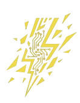

SynKyn Studios
Return to Set
System Error
4
0
4
Sequence Not Found
The cinematic sequence you are looking for has been cut from the final edit, or it never existed. The AI director suggests returning to base.
Return to Homepage
Report an Issue